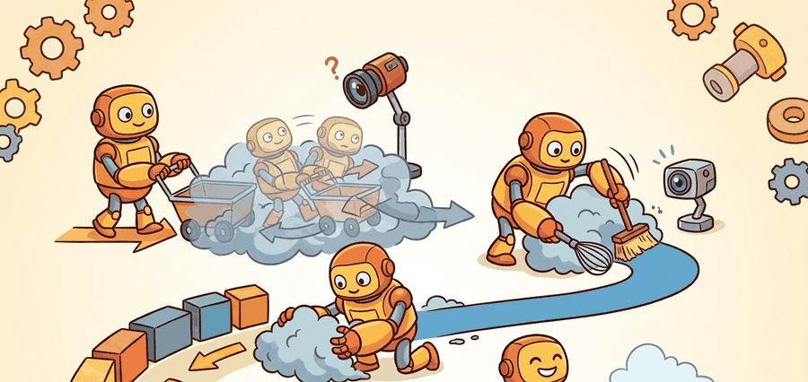

"The policy did not choose an action. It erased the noise until an action was all that remained."
A Denoising Practitioner

This section assumes familiarity with the action-chunking formulation introduced in section 22.1 and with the imitation learning objective covered in section 21.2. The denoising math here is extended in section 22.5, which replaces the noise-prediction objective with flow matching for faster inference. The multimodal action distribution idea recurs in Part VII alongside robot foundation models in section 35.2.
A robot arm hesitates at a bowl of tangled cables: any single "best" grasp collapses three equally valid approaches into a blurry average that succeeds at none of them. Diffusion Policy sidesteps that collapse by starting from pure noise in action space and iteratively denoising toward a coherent trajectory, conditioned on the current observation. The result is a policy that can hold several viable futures in tension until the observation resolves the ambiguity. Right now this matters because robot manipulation tasks are full of such multimodal choices, and every prior behavior-cloning method that outputs a single Gaussian mean pays a steep price in those moments. Here you will derive the training objective, trace one full denoising pass, and see how receding-horizon execution closes the loop.
This section develops the technical contract for diffusion policy: action generation by denoising into a usable mental model. First we define the object of study, then we connect it to the agent loop, then we test it with a compact implementation.
The key question in Diffusion Policy: action generation by denoising is practical: what must the agent know, what can it observe, what action is available, and what evidence shows that the action worked under the stated conditions?
A representation earns its place when it changes the measurable action interface. In diffusion policy: action generation by denoising, the reader should keep asking which decision becomes easier, safer, or more reliable.
Theory
For Diffusion Policy: action generation by denoising, the practical design rule is to make the interface inspectable before optimization begins: inputs, outputs, units, latency, bounds, and failure labels should all be visible in the saved artifact.
The mechanism in Diffusion Policy: action generation by denoising is the contract between representation and action. Name what enters the module, what leaves it, which assumptions make that transformation valid, and which log would reveal a bad handoff.
Worked Example
For Diffusion Policy: action generation by denoising, keep one concrete rollout in view. A sensor reading becomes an estimate, the estimate constrains an action, the action changes the world, and the next observation confirms or contradicts the assumption. The section's idea is useful only if it improves that loop.
from pathlib import Path
dataset_root = Path("robot_demos")
for episode in sorted(dataset_root.glob("episode_*")):
print("inspect", episode.name)
print("next step: convert demonstrations to the LeRobotDataset format")Expected output: the printed trace for Diffusion Policy: action generation by denoising should expose the method configuration, the measured evidence field, and the failure label. If one of those fields is missing or unchanged under the perturbation, the example is not yet an evaluation artifact.
Consider a specific case: a Diffusion Policy trained on the Chi et al. (2023) Push-T task uses a horizon of 16 steps, K=100 DDIM denoising steps, and a U-Net conditioned on a 96x96 RGB observation. At inference, the policy samples Gaussian noise of shape (16, 2) representing 16 future (x, y) end-effector waypoints, then iteratively denoises over 100 steps to produce a clean trajectory. The robot executes the first 8 steps (the receding-horizon fraction), re-observes, and denoises again. Measured task success on the held-out evaluation set reaches roughly 90% when the T-block starts near the demonstrated positions, but drops to around 55% when the block is rotated 45 degrees outside the training distribution, which concretely illustrates the coverage limit.
The from-scratch fragment should expose the assumption behind diffusion action sequences with sampler steps, horizon, latency, and receding-horizon execution. For serious runs, use LeRobot, robomimic, ACT, Diffusion Policy, VQ-BeT, ALOHA, GELLO, or UMI with the same manifest and evaluator.
Diffusion Policy As Conditional Denoising
Diffusion Policy represents a robot policy as an iterative denoising process over an action sequence. Training samples a clean action chunk $A_0$, adds noise at diffusion step $k$ to produce $A_k$, then trains a network $\epsilon_\theta$ to predict the injected noise from the noisy action chunk and the observation context:
$$\mathcal{L}_{diff} = \mathbb{E}_{A_0,\epsilon,k}\left[\left\|\epsilon - \epsilon_\theta(A_k, k, o_t)\right\|_2^2\right], \quad A_k = \sqrt{\bar\alpha_k}A_0 + \sqrt{1-\bar\alpha_k}\epsilon.$$
At inference, the policy starts with Gaussian noise and repeatedly denoises it into an action chunk, then executes the first part in receding-horizon control. This makes multimodal action distributions natural: different denoising samples can choose different valid futures such as grasping an object from the left or from the right.
Algorithm: Diffusion Policy Inference via Iterative Denoising
Input: current observation $o_t$, trained noise-prediction network $\epsilon_\theta$, denoising schedule $\{\bar\alpha_k\}_{k=1}^{K}$, number of denoising steps $K$, action horizon $H$, receding-horizon fraction $H_{\text{exec}} \leq H$
Output: executed action subsequence $A_{0}^{(1:H_{\text{exec}})}$ applied to the robot
- Sample initial action noise: $A_K \sim \mathcal{N}(0, I)$ with shape $(H, \dim_a)$.
- For each denoising step $k = K, K{-}1, \ldots, 1$:
- Predict injected noise: $\hat\epsilon = \epsilon_\theta(A_k,\, k,\, o_t)$.
- Compute the denoised action estimate: $\hat A_0 = \frac{A_k - \sqrt{1-\bar\alpha_k}\,\hat\epsilon}{\sqrt{\bar\alpha_k}}$.
- Re-noise to step $k{-}1$ using the DDPM (or DDIM) reverse update: $A_{k-1} = \sqrt{\bar\alpha_{k-1}}\,\hat A_0 + \sqrt{1-\bar\alpha_{k-1}}\,\hat\epsilon$.
- After all $K$ steps, obtain clean action chunk $A_0 = A_0^{(1:H)}$.
- Execute only the first $H_{\text{exec}}$ steps of $A_0$ on the robot.
- Re-observe the environment to obtain $o_{t+H_{\text{exec}}}$.
- Set $t \leftarrow t + H_{\text{exec}}$ and return to step 1 (receding-horizon loop).
Regression tends to average incompatible actions. Denoising learns a distribution over coherent chunks, so the policy can commit to one valid mode instead of blending several into a physically meaningless middle.
Code Fragment 3 performs the forward noising calculation for one scalar action so the formula is inspectable.
# Apply one diffusion noising step to an action value.
# The calculation mirrors the training target for denoising policies.
import math
clean_action = 0.40
epsilon = -0.30
alpha_bar = 0.81
noisy_action = math.sqrt(alpha_bar) * clean_action + math.sqrt(1 - alpha_bar) * epsilon
print(f"noisy action: {noisy_action:.3f}")
print(f"target noise: {epsilon:.3f}")target noise: -0.300
alpha_bar. Diffusion training asks the network to recover the noise term, which indirectly teaches how to move noisy action chunks back toward valid robot behavior.Practical Recipe
- Write the observation, action, and success metric before choosing a model.
- Build a baseline that is simple enough to debug by inspection.
- Add the library implementation only after the baseline behavior is understood.
- Record failures as structured cases: perception error, state error, planning error, control error, or evaluation error.
- Run at least one perturbation test before trusting the result.
The common mistake in Diffusion Policy: action generation by denoising is to celebrate the component score before checking the closed-loop handoff. The failure usually appears at the boundary: stale state, wrong frame, delayed action, saturated actuator, or metric that ignores the real task cost.
Three failure modes appear most often in deployed diffusion policies. First, inference latency: with K=100 denoising steps on a U-Net, a single action chunk can take 80-200 ms to generate, which is too slow for a 10 Hz control loop; practitioners reduce K to 10-20 using DDIM sampling, but aggressive step reduction can produce blurry or jerky trajectories. Second, out-of-distribution contact: if the demonstration set covers grasping from above but the object shifts 15 cm forward, the denoised action chunk can steer the gripper into empty space with high confidence because the model learned the contact geometry, not the object location. Third, mode collapse under limited data: with fewer than roughly 50 demonstrations per task mode, the denoising network may always converge to the same mode and ignore the alternative valid grasp, defeating the multimodal advantage that motivates the approach.
When reducing DDIM steps to cut inference latency, set num_inference_steps in the DDIMScheduler config rather than retraining: the official real-stanford/diffusion_policy repo exposes this as inference_num_ddim_iters in the hydra config and defaults to 100. Dropping to 16 steps typically keeps task success within 5 percentage points of the 100-step baseline on Push-T while cutting chunk generation time from roughly 150 ms to under 25 ms on a single GPU. Verify on your own task before deploying, because contact-rich tasks with tight tolerances degrade more sharply than planar push tasks at low step counts.
A robot learning engineer applying diffusion policy: action generation by denoising starts by recording the robot body, camera setup, action units, operator source, and split policy for every episode. That record makes it possible to compare ACT with a baseline without changing the task definition midstream.
For diffusion policy: action generation by denoising, the useful test is simple: could a teammate point to the log line, plot, or trace that proves the idea changed the agent's next action?
For Diffusion Policy: action generation by denoising, treat frontier claims as hypotheses until they expose enough detail to reproduce the result: data boundary, embodiment, controller interface, evaluation panel, and failure cases.
Can you name the observation, state estimate, action, success metric, and most likely failure mode for diffusion policy: action generation by denoising? If not, the system boundary is still too vague.
Diffusion Policy: action generation by denoising becomes useful when it is tied to a closed-loop contract. In this Part V section on Diffusion Policy: action generation by denoising, the contract names the observation stream, the state estimate, the action representation, the timing budget, and the evaluation artifact. Without that contract, a model can look capable in a notebook while failing the first time a sensor drops a frame or a controller saturates.
For Diffusion Policy: action generation by denoising, separate the conceptual claim, the systems claim, and the evidence claim. A plausible mechanism, a clean interface, and a closed-loop result are different claims; the section should keep their evidence separate.
| Tool or Library | Role in the Topic | Builder Advice |
|---|---|---|
| Gymnasium | Diffusion Policy: action generation by denoising | Use it when the experiment needs a maintained implementation rather than custom glue. |
| PettingZoo | Diffusion Policy: action generation by denoising | Use it when the experiment needs a maintained implementation rather than custom glue. |
| ROS 2 | Diffusion Policy: action generation by denoising | Use it when the experiment needs a maintained implementation rather than custom glue. |
| MuJoCo | Diffusion Policy: action generation by denoising | Use it when the experiment needs a maintained implementation rather than custom glue. |
| LeRobot | Diffusion Policy: action generation by denoising | Use it when the experiment needs a maintained implementation rather than custom glue. |
For Diffusion Policy: action generation by denoising, start with a small baseline that logs inputs, outputs, units, timestamps, and termination conditions before moving to Gymnasium or PettingZoo. The library run should keep the same artifact schema, so the comparison remains a same-task evaluation.
- Write a one-paragraph task contract with observation, action, success, and failure fields.
- Start with the smallest simulator, dataset, or wrapper that exposes the task contract faithfully.
- Run one deterministic smoke test and one perturbation test before scaling.
- Save a single result artifact containing configuration, seed, metrics, videos or traces, and failure labels.
- Compare methods only when one script evaluates them on the same task panel.
When Diffusion Policy: action generation by denoising fails, avoid labeling the whole method as weak. First assign the failure to perception, state estimation, planning, control, timing, data coverage, or evaluation. Then rerun one controlled perturbation that isolates the suspected cause. This pattern turns a disappointing rollout into a reusable diagnostic asset.
Agent Checklist Integration
Diffusion Policy: action generation by denoising should be evaluated through four lenses: the learning objective, the robot interface, the data artifact, and the deployment failure mode. Action generators differ mainly in how they represent time, uncertainty, and multimodality across the next chunk of motion.
For Diffusion Policy exposes sampler latency, denoising horizon, receding-horizon execution, and multimodal contact behavior, define observations, action representation, dataset source, rollout evaluator, and failure labels before training. Then compare baseline and library implementation on the same configuration.
For Diffusion Policy exposes sampler latency, denoising horizon, receding-horizon execution, and multimodal contact behavior, each demonstration binds operator behavior, robot body, sensor calibration, action representation, and reset distribution. Changing one field creates a new evaluation contract.
| Agent Lens | Question To Answer | Concrete Evidence |
|---|---|---|
| Curriculum and depth | What concept is new here, and why does Part V need it? | A definition, a worked example, and a failure case tied to the perception-action loop. |
| Code and tools | Which maintained tool removes boilerplate after the from-scratch baseline? | ACT, Diffusion Policy, flow matching, VQ-BeT, ALOHA evaluated against the same task contract. |
| Data and evaluation | What distribution produced the behavior, and where can it break? | Train, validation, and stress splits with explicit robot, camera, timing, and license metadata. |
| Publication quality | Can the reader reproduce the claim without hidden context? | Captions, bibliography cards, cross-links, and a same-artifact audit trail. |
Do not claim that diffusion policy: action generation by denoising improves robot learning unless the baseline and the proposed method share the same robot, task split, reset distribution, success metric, and random seed policy. Otherwise the comparison may be measuring dataset difficulty rather than method quality.
For Diffusion Policy exposes sampler latency, denoising horizon, receding-horizon execution, and multimodal contact behavior, judge the method by closed-loop recovery, latency, stability, contact behavior, and failure labels under the same robot, reset distribution, cameras, and evaluator.
Who: A robot learning engineer evaluating diffusion action sequences with sampler steps, horizon, latency, and receding-horizon execution on the same manipulation benchmark, robot, camera setup, and reset protocol.
Situation: The engineer needs to decide whether diffusion policy: action generation by denoising is ready for a weekly policy comparison across 120 demonstrations and 30 held-out rollouts.
Decision: They keep the smallest runnable baseline for diffusion action sequences with sampler steps, horizon, latency, and receding-horizon execution, then compare the maintained implementation under the same manifest, seed, split, and rollout evaluator.
Result: The team gets one artifact for diffusion action sequences with sampler steps, horizon, latency, and receding-horizon execution with task success, intervention labels, timing violations, recovery behavior, and failure categories.
Lesson: diffusion action sequences with sampler steps, horizon, latency, and receding-horizon execution earns trust only when the data contract, action representation, and rollout evaluator are versioned together.
Before leaving this section, write one sentence that links diffusion policy: action generation by denoising to each of these connected chapters: Chapter 21: Imitation Learning, Chapter 23: Teleoperation and Data Collection, Chapter 35: Robot Foundation Models and Cross-Embodiment Learning. If any link feels forced, the section needs a sharper boundary or a clearer prerequisite recap.
Diffusion Policy: action generation by denoising is useful when it makes the perception-action loop more reliable, not when it merely adds a more impressive model name.
Design a method-matched experiment for Diffusion Policy: action generation by denoising. Specify the environment, observation schema, action interface, metric, and one perturbation that targets the section's core assumption.
What's Next
This section grounded diffusion policy: action generation by denoising in an explicit robot-data contract: observations, actions, demonstrations, evaluation splits, and failure labels. The next reading step is Section 22.5, where the same contract is carried into the next technique or chapter.
Zhao, T. Z. et al. (2023). Learning Fine-Grained Bimanual Manipulation with Low-Cost Hardware. RSS.
This paper introduces ALOHA and Action Chunking with Transformers for bimanual manipulation. It is central for understanding why predicting chunks can stabilize high-frequency robot control.
Diffusion Policy frames action generation as conditional denoising over robot action trajectories. Read it for multimodal action distributions, receding horizon control, and the implementation details behind modern diffusion robot policies.
Lipman, Y. et al. (2022). Flow Matching for Generative Modeling.
Flow matching gives the generative-model background behind many faster action samplers. It is useful when comparing diffusion-style iterative denoising with direct vector-field training.
The project page summarizes the hardware, data collection setup, and ACT policy used for fine-grained bimanual tasks. Builders should use it to connect the paper's algorithm to an actual low-cost robot platform.
real-stanford/diffusion_policy: Official Diffusion Policy Code.
The official code provides training and evaluation examples for state-based and vision-based tasks. It is the shortest route from the section's theory to a runnable policy-learning experiment.